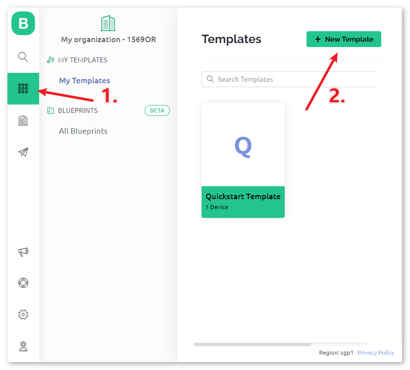
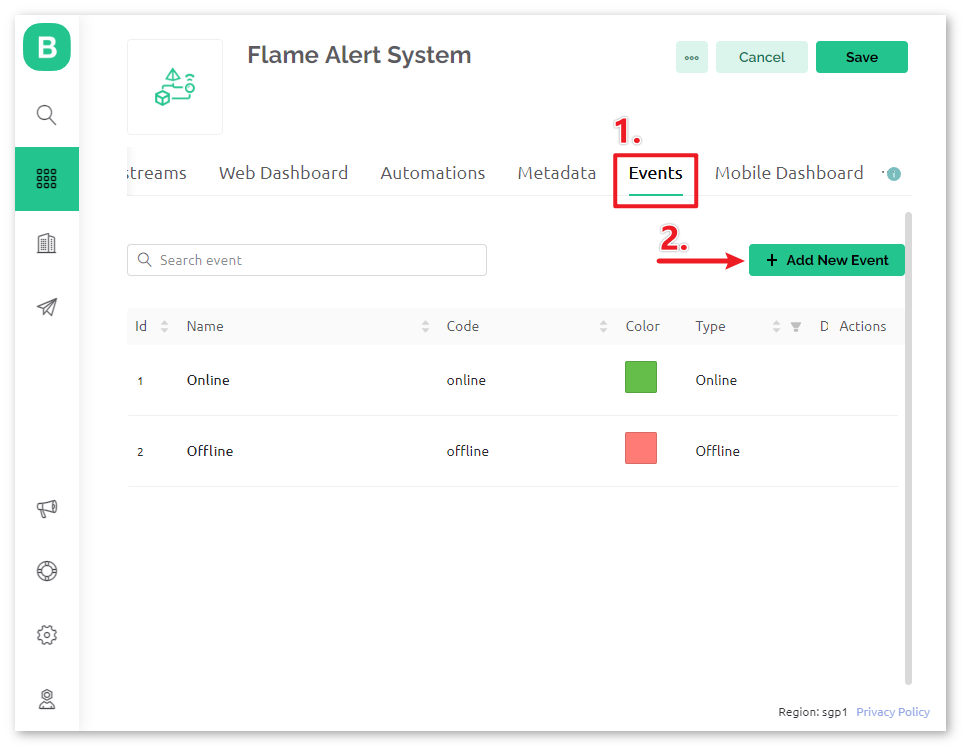
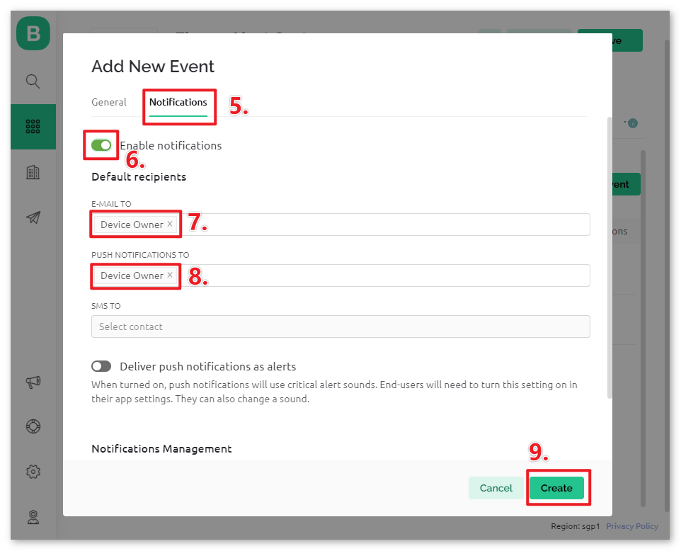
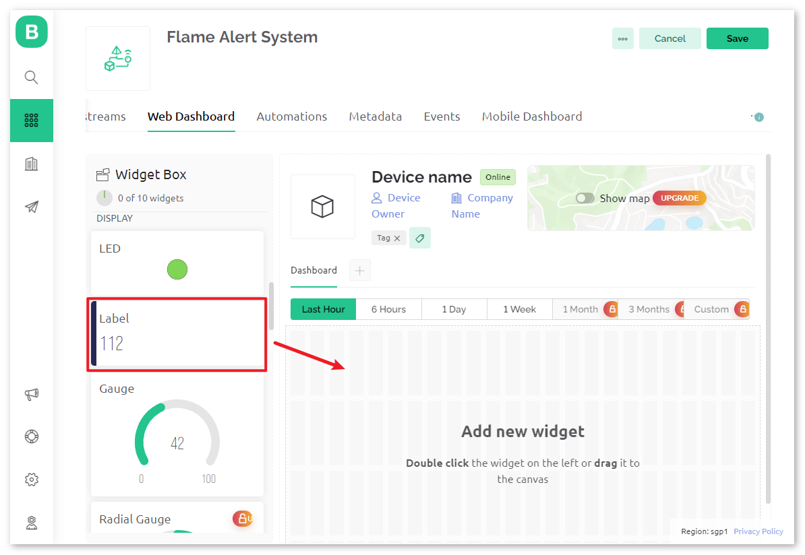
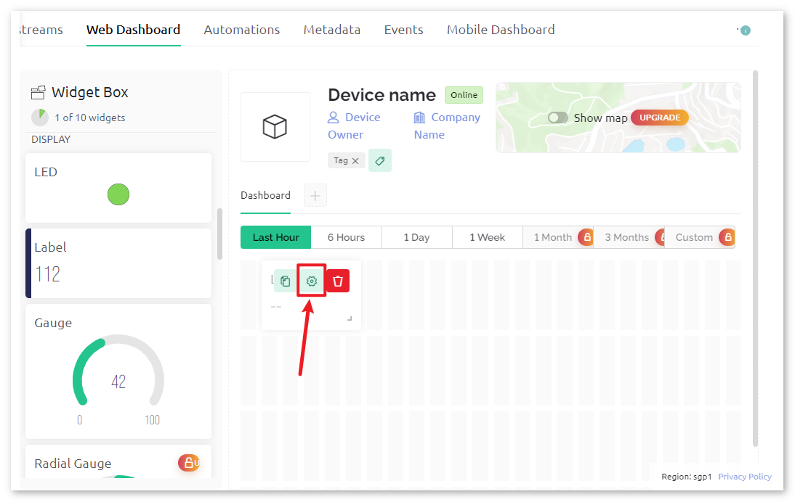
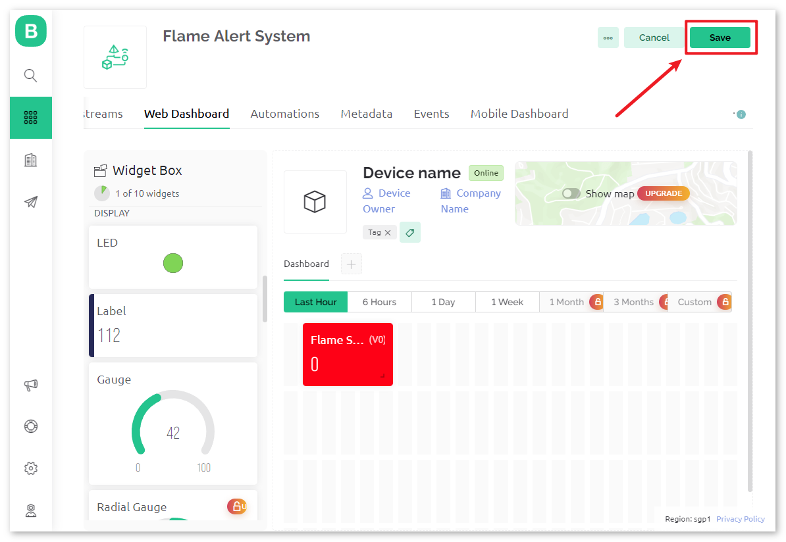
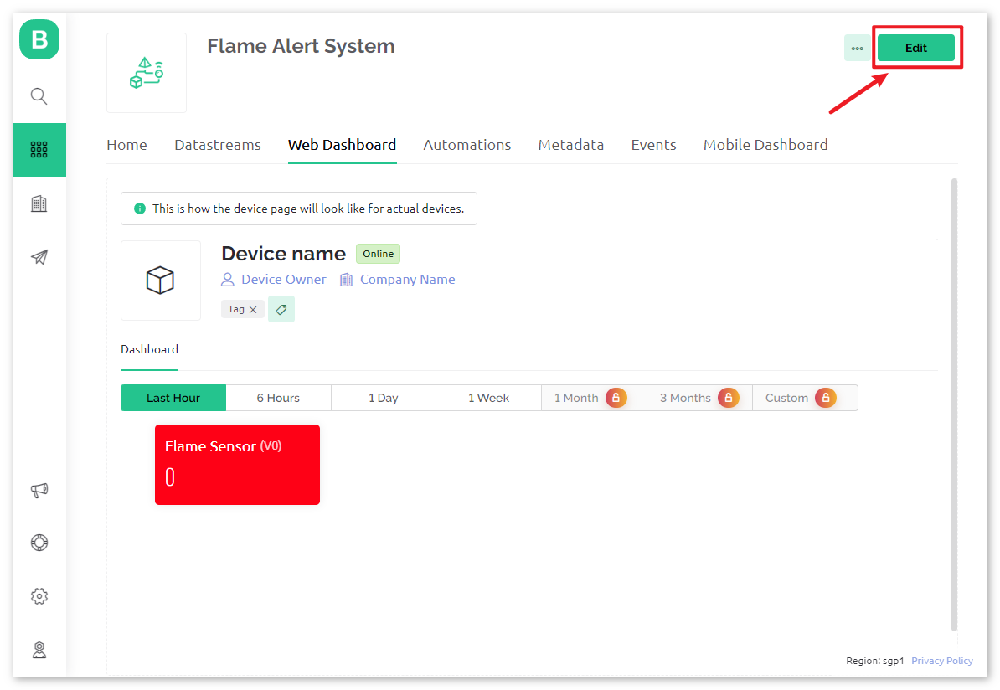
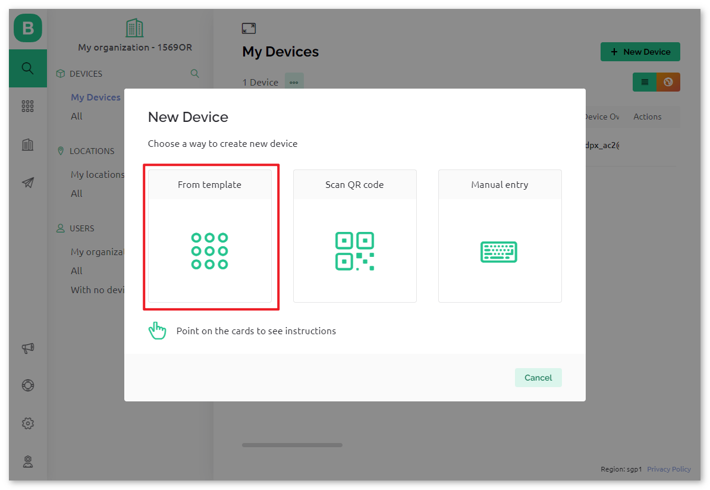
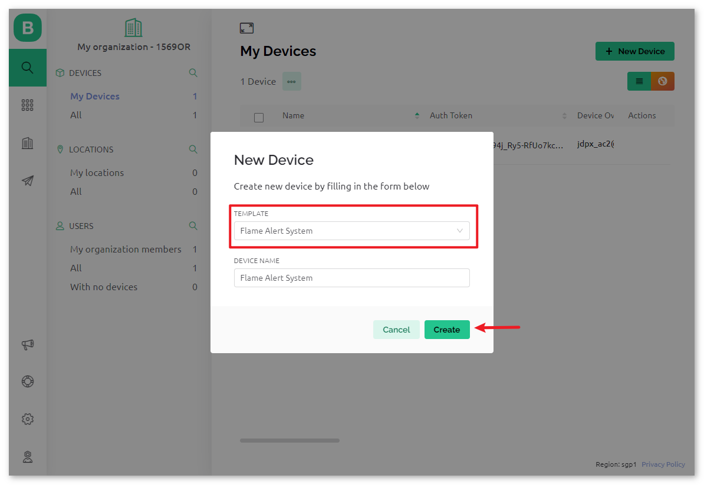

Bemerkung
Hallo und willkommen in der SunFounder Raspberry Pi & Arduino & ESP32 Enthusiasten-Gemeinschaft auf Facebook! Tauchen Sie tiefer ein in die Welt von Raspberry Pi, Arduino und ESP32 mit anderen Enthusiasten.
Warum beitreten?
Expertenunterstützung: Lösen Sie Nachverkaufsprobleme und technische Herausforderungen mit Hilfe unserer Gemeinschaft und unseres Teams.
Lernen & Teilen: Tauschen Sie Tipps und Anleitungen aus, um Ihre Fähigkeiten zu verbessern.
Exklusive Vorschauen: Erhalten Sie frühzeitigen Zugang zu neuen Produktankündigungen und exklusiven Einblicken.
Spezialrabatte: Genießen Sie exklusive Rabatte auf unsere neuesten Produkte.
Festliche Aktionen und Gewinnspiele: Nehmen Sie an Gewinnspielen und Feiertagsaktionen teil.
👉 Sind Sie bereit, mit uns zu erkunden und zu erschaffen? Klicken Sie auf [hier] und treten Sie heute bei!
Flammenwarnsystem mit Blynk
In diesem Kapitel zeigen wir Ihnen, wie Sie mit Blynk ein Flammenalarmsystem für Ihr Zuhause einrichten können. Mit einem Flammensensor können Sie potenzielle Brände in Ihren vier Wänden frühzeitig erkennen. Über Blynk können Sie die erfassten Daten im Internet überwachen. Im Falle eines Feuers erhalten Sie umgehend eine E-Mail-Benachrichtigung.
1. Schaltung aufbauen
Bemerkung
Das ESP8266-Modul benötigt eine hohe Stromstärke für einen stabilen Betrieb. Achten Sie daher darauf, dass die 9V-Batterie angeschlossen ist.

2. Blynk konfigurieren
2.1 Vorlage erstellen
Zuerst erstellen wir in Blynk eine Vorlage für das „Flame Alert System“.


Achten Sie darauf, dass bei HARDWARE ESP8266 und bei CONNECT TYPE WiFi eingestellt ist.

2.2 Datenstrom
Erstellen Sie im Bereich Datastream einen Datastream des Typs Virtual Pin, um den Wert des Flammensensors zu erfassen.

Geben Sie dem Virtual Pin den Namen flame_sensor_value. Setzen Sie den DATA TYPE auf Integer und MIN und MAX auf 0 und 1.

2.3 Ereignis
Nun legen wir ein event an, das bei Flammenerkennung protokolliert und eine E-Mail-Benachrichtigung verschickt.


Bemerkung
Es wird empfohlen, die Einstellungen beizubehalten, um den Code ohne weitere Anpassungen verwenden zu können.
Legen Sie den EVENT NAME auf flame_detection_alert fest. Sie können den Inhalt der versendeten E-Mail anpassen, indem Sie eine DESCRIPTION für die Auslösung des Ereignisses festlegen. Darunter können Sie auch die Häufigkeitsbeschränkungen für die Ereignisauslösung einstellen.

Navigieren Sie zur Notifications-Seite und konfigurieren Sie die E-Mail-Einstellungen.


2.4 Web-Dashboard
Wir richten auch das Web-Dashboard ein, um die vom Uno-Board übermittelten Sensordaten darzustellen.
Fügen Sie auf der Web-Dashboard-Seite ein Label-Widget hinzu.


In den Einstellungen des Label-Widgets wählen Sie als Datenstrom flame_sensor_value(V0) aus. Legen Sie dann die Farbe des WIDGET BACKGROUND so fest, dass sie sich mit dem Datenwert ändert. Bei einem Wert von 1 wird der Hintergrund grün, bei einem Wert von 0 rot dargestellt.



2.5 Vorlage speichern
Vergessen Sie nicht, die Vorlage zum Schluss zu speichern.


Falls Sie die Vorlage nachträglich bearbeiten müssen, können Sie oben rechts auf das Bearbeitungssymbol klicken.


3. Code ausführen
Öffnen Sie die Datei
01-Flame_alert_system.inoim Verzeichnisultimate-sensor-kit\iot_project\wifi\01-Flame_alert_system, oder kopieren Sie diesen Code in die Arduino IDE.Legen Sie ein Blynk-Gerät mit der Vorlage für die Flammenerkennung an. Anschließend ersetzen Sie
BLYNK_TEMPLATE_ID,BLYNK_TEMPLATE_NAMEundBLYNK_AUTH_TOKENdurch Ihre eigenen Angaben.#define BLYNK_TEMPLATE_ID "TMPxxxxxxx" #define BLYNK_TEMPLATE_NAME "Flame Alert System" #define BLYNK_AUTH_TOKEN "xxxxxxxxxxxxx"




Geben Sie auch die
SSIDund dasPasswortIhres WLANs ein.char ssid[] = "your_ssid"; char pass[] = "your_password";
Wählen Sie das korrekte Board und den Port aus und klicken Sie auf die Schaltfläche Hochladen.
Öffnen Sie den seriellen Monitor (Baudrate auf 115200 einstellen) und warten Sie auf eine erfolgreiche Verbindungsmeldung.

Bemerkung
Falls die Meldung
ESP is not respondingerscheint, befolgen Sie bitte diese Schritte:Stellen Sie sicher, dass die 9V-Batterie angeschlossen ist.
Setzen Sie das ESP8266-Modul zurück, indem Sie den Pin RST für 1 Sekunde mit GND verbinden und dann wieder trennen.
Drücken Sie die Reset-Taste auf dem R4-Board.
Manchmal müssen Sie diese Schritte 3-5 Mal wiederholen. Bitte haben Sie Geduld.
Blynk zeigt jetzt die vom Flammensensor gelesenen Daten an. Im Label-Widget sehen Sie den vom Flammensensor gelesenen Wert. Bei einem angezeigten Wert von 1 wird der Hintergrund des Labels grün, bei einem Wert von 0 rot angezeigt, und Blynk sendet Ihnen eine Warn-E-Mail.

Wenn Sie Blynk auf mobilen Geräten verwenden möchten, beachten Sie bitte Wie verwendet man Blynk auf dem Mobilgerät?.


4. Code-Erklärung
Bibliotheksinitialisierung
Bevor wir beginnen, ist es wichtig, die erforderlichen Bibliotheken und Einstellungen für die Kommunikation zwischen Arduino, dem ESP8266-WLAN-Modul und der Blynk-App einzurichten. Dieser Code setzt die benötigten Bibliotheken auf und konfiguriert eine Software-Serielle Verbindung zwischen Arduino und ESP8266-Modul mit der passenden Baudrate für die Datenübertragung.
//Set debug prints on Serial Monitor #define BLYNK_PRINT Serial #include <ESP8266_Lib.h> // Library for ESP8266 #include <BlynkSimpleShieldEsp8266.h> // Library for Blynk // Software Serial on Uno #include <SoftwareSerial.h> SoftwareSerial EspSerial(2, 3); // RX, TX #define ESP8266_BAUD 115200 // Set the ESP8266 baud rate ESP8266 wifi(&EspSerial);
Blynk- und WLAN-Konfiguration
Damit das Projekt mit der Blynk-App kommunizieren kann, muss es sich mit einem WLAN-Netzwerk verbinden. Die Anmeldeinformationen werden hier angegeben.
// Template ID, Device Name and Auth Token are provided by the Blynk Cloud // See the Device Info tab, or Template settings #define BLYNK_TEMPLATE_ID "TMPxxxxxx" #define BLYNK_TEMPLATE_NAME "Flame Alert System" #define BLYNK_AUTH_TOKEN "xxxxxxxxxxxxxxx" // Your WiFi credentials. // Set password to "" for open networks. char ssid[] = "your_ssid"; char pass[] = "your_password";
Sensor-Pin & Timer-Deklaration
Definieren Sie die Pin-Nummer für die Flamme. Die Blynk-Bibliothek bietet einen integrierten Timer, und wir erstellen ein Timer-Objekt. Bitte beachten Sie Warum verwenden wir den Blynk-Timer? .
const int sensorPin = 8; BlynkTimer timer;
setup()-Funktion
Hier werden anfängliche Konfigurationen wie das Setzen des Pin-Modus für sensorPin, die Initiierung der seriellen Kommunikation, die Einstellung des BlynkTimers und die Verbindung zur Blynk-App durchgeführt.
Wir verwenden
timer.setInterval(1000L, myTimerEvent)um das Timer-Intervall in setup() festzulegen. Hier setzen wir es so, dass die FunktionmyTimerEvent()alle 1000 ms ausgeführt wird. Den ersten Parameter vontimer.setInterval(1000L, myTimerEvent)können Sie ändern, um das Intervall zwischen den Ausführungen vonmyTimerEventzu ändern.
void setup() { pinMode(sensorPin, INPUT); Serial.begin(115200); EspSerial.begin(ESP8266_BAUD); delay(1000); timer.setInterval(1000L, myTimerEvent); Blynk.config(wifi, BLYNK_AUTH_TOKEN); Blynk.connectWiFi(ssid, pass); }
loop()-Funktion
Die Hauptloop führt die Blynk- und Timer-Dienste kontinuierlich aus.
void loop() { Blynk.run(); timer.run(); }
myTimerEvent() & sendData()-Funktion
void myTimerEvent() { // Please don't send more that 10 values per second. sendData(); // Call function to send sensor data to Blynk app }
Die Funktion
sendData()liest den Wert vom Flammensensor und sendet ihn an Blynk. Wenn eine Flamme erkannt wird (Wert 0), sendet sie einFlammenerkennungsalarm-Ereignis an die Blynk-App.Verwenden Sie
Blynk.virtualWrite(vPin, Wert)um Daten an den virtuellen Pin V0 in Blynk zu senden. Mehr dazu unter Blynk.virtualWrite() .Nutzen Sie
Blynk.logEvent("Ereigniscode")um ein Ereignis in Blynk zu protokollieren. Mehr dazu unter Blynk.logEvent() .
void sendData() { int data = digitalRead(sensorPin); Blynk.virtualWrite(V0, data); // send data to virtual pin V0 on Blynk Serial.print("flame:"); Serial.println(data); // Print flame status on Serial Monitor if (data == 0) { Blynk.logEvent("flame_alert"); // log flame alert event if sensor detects flame } }
Referenzen